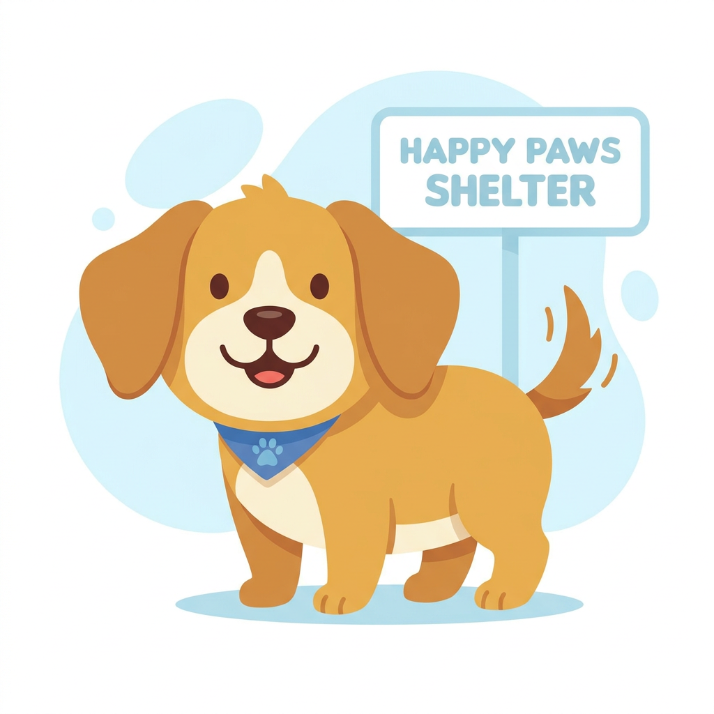

Project Milestone 4
Breed Selection Summary
Click any animal breed bar in the graph above to view that breed’s count and exact percentage in comparison to all animals within the shelters.
Top Breeds in Comparison to All Shelter Animals
| Rank | Breed | Animal Type | Intakes | % of All Animals |
|---|---|---|---|---|
| 1 | Domestic Shorthair Mix | Cat | 504 | 25.20% |
| 2 | Pit Bull Mix | Dog | 151 | 7.55% |
| 3 | Chihuahua Shorthair Mix | Dog | 148 | 7.40% |
| 4 | Labrador Retriever Mix | Dog | 112 | 5.60% |
| 5 | Domestic Medium Hair Mix | Cat | 65 | 3.25% |
| 6 | Australian Cattle Dog Mix | Dog | 46 | 2.30% |
| 7 | Bat Mix | Other | 38 | 1.90% |
| 8 | German Shepherd Mix | Dog | 38 | 1.90% |
| 9 | Domestic Longhair Mix | Cat | 35 | 1.75% |
| 10 | Dachshund Mix | Dog | 26 | 1.30% |
Shelter Intake Concentration by State

🏛️ Top 10 States for Shelter Intakes
Based on national reporting from Shelter Animals Count and Best Friends Animal Society:
| Rank | State | Est. Intakes |
|---|---|---|
| 1 | Texas | ~680,000 |
| 2 | California | ~520,000 |
| 3 | Florida | ~370,000 |
| 4 | North Carolina | ~220,000 |
| 5 | Georgia | ~190,000 |
| 6 | Ohio | ~150,000 |
| 7 | Louisiana | ~130,000 |
| 8 | New York | ~125,000 |
| 9 | Illinois | ~115,000 |
| 10 | Arizona | ~110,000 |
These 10 states account for more than 50% of all shelter intakes nationwide.